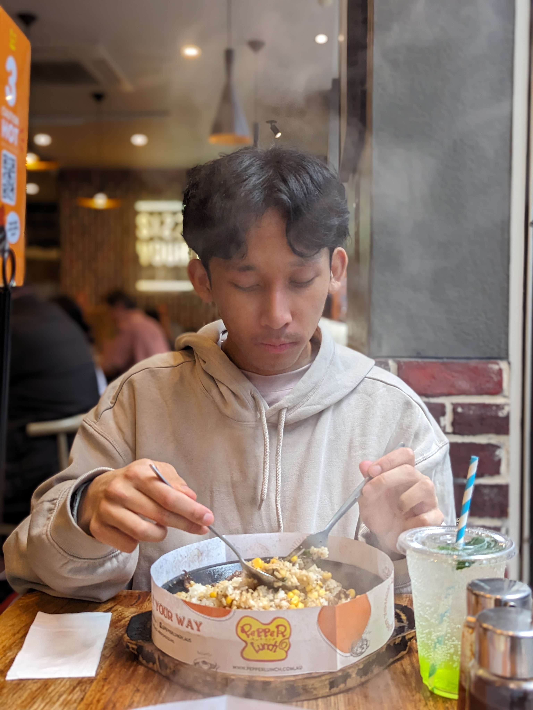

My name is Ben. I am born in Melbourne Australia and have lived here all my life.
I recently graduated from the University of Melbourne with a Bachelor's degree in Science, majoring
in Computing and Software Systems.
I started coding during my time at University, where I learnt the fundamentals of computing and worked with
many different languages. These include Java, Python, HTML/CSS and many others. Throughout my study, I have
also had the chance to work with others on projects, giving me an idea of what it is like to work collaboratively
on code.
Outside of coding, my passion is playing fighting games. Since 2020, I have been helping out volunteering at
Brofist Gaming, an organisation that runs social events for people like me to gather and play fighting games.
After graduating, I have also been lucky enough to travel around the world and represent Australia for Tekken 7.
Some places I have had the opportunity to visit include Japan, Romania and Amsterdam.